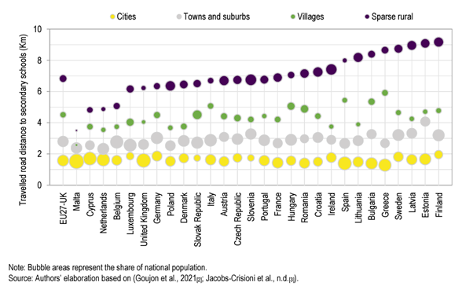

The Facts
Brighton and Hove Secondary School Admissions - Factsheet
Fact 1 - Disadvantaged Attainment
In 2024, all students in Brighton and Hove - both disadvantaged and non-disadvantaged - achieved ABOVE the national (median) average when compared to other Local Authorities (both Upper and Lower Tier) in England. There is an attainment gap between disadvantaged and non-disadvantaged pupils in every Local Authority in England. Brighton’s is an artefact of non-disadvantaged students doing far better than average.

Fact 2 - School Demand
Demand for schools varies significantly across the city. At the lower end, in the last 5-years, Longhill has received significantly fewer total applications (1st, 2nd and 3rd choice combined) than its Published Admission Number (PAN) of 270.
Over the last 10 years (since 2014), Longhill’s total offers have been in steady decline every year, and it has never achieved anywhere near 270 offers. It’s peak was in 2019 when it made 225 offers. Last year it made 94 offers.

Fact 3 - Geodemographic Reality
School children in Brighton and Hove are not distributed evenly across the city and school locations do not match where pupils live, in some cases.

Fact 4 - Demographic Decline
Brighton and Hove’s student population will decline over the next decade. It is unlikely this decline will be even across the city
Fact 5 - Distance Travelled to School
Some children in Brighton and Hove under current catchment arrangements (particularly those who live in Whitehawk) don’t live near to any secondary school and have no option to walk to school. Most children from Whitehawk currently have to attend Longhill, which is a bus journey away.
Under Option B, significant numbers of children (estimates of up to 365 a day) from central Brighton would be forced to to travel 4-5 miles (6-8km) to attend school at Longhill. A journey which currently takes 1 to 1.5hrs on a bus, each way, so 2-3 hrs a day of travelling.
Across the whole of Europe, the average distance travelled to secondary school in Cities, Towns and Suburbs is less than 3km. On average, journeys of over 6km only occur in ‘sparse rural’ areas.
Fact 6 - Travelling long distances to School harms educational outcomes.
Fact 1 - Detail
For disadvantaged student attainment in GCSE Maths and English, 24% achieved grade 9-5, ranking it 61st out of 153 Local Education Authorities (against a national median of 23%). With 27 of the top 28 being in London. Excluding London, Brighton ranks 30th best out of 122 Local Education Authorities in the rest of England for disadvantaged attainment at GCSE in 2024.
Brighton ranks 35th out of 153 Local Education Authorities for non-disadvantaged attainment with 57.5% of students achieved grade 9-5 in English and Maths GCSE (against a national median of . Excluding London Boroughs (as Brighton already exceeds the performance of 10 boroughs) Brighton and Hove would rank 12th best out of the remaining 122 Local Education Authorities in the rest of England.
The relatively large size of the attainment gap in Brighton and Hove is due more to the higher levels of achievement of its non-disadvantaged students.
The Education Policy Institute - the leading research organisation in the UK in this area - using a more sophisticated measurement of gap (incorporating longitudinal disadvantage and ranking to reduce the biasing effects of London) - https://epi.org.uk/annual-report-2024-local-authority-gaps-2/ - shows that Brighton is one of the few local authorities in the UK to reduce its
Source - Department for Education - https://explore-education-statistics.service.gov.uk/find-statistics/key-stage-4-performance - table 2233_sl_lad_fsm_dis_data_revised.csv and
Fact 2 - Detail
Fact 5 Detail
Travelled distance to secondary schools per student by country and degree of urbanisation (estimated), EU27+UK
